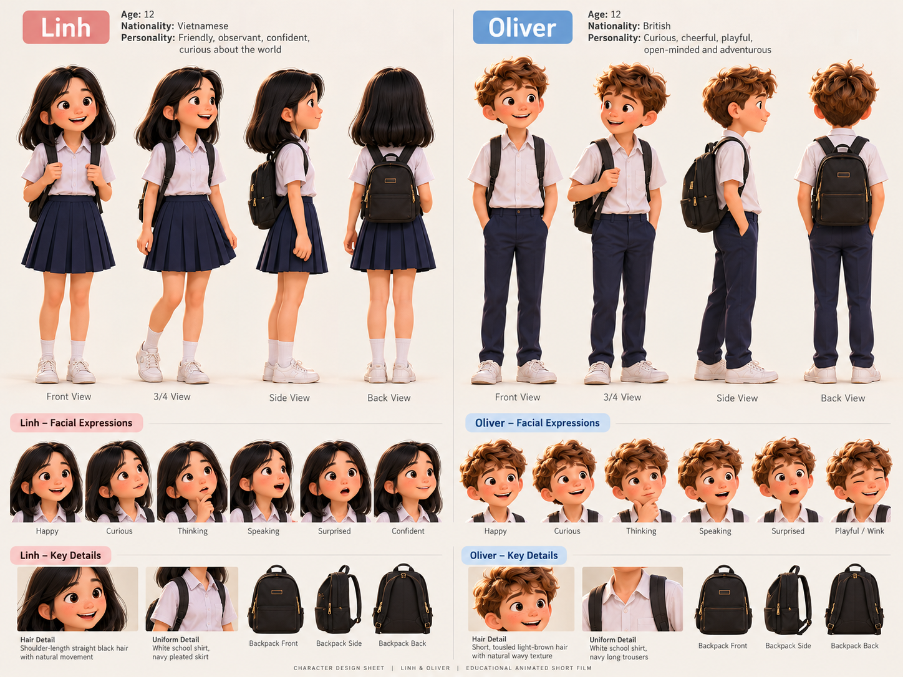
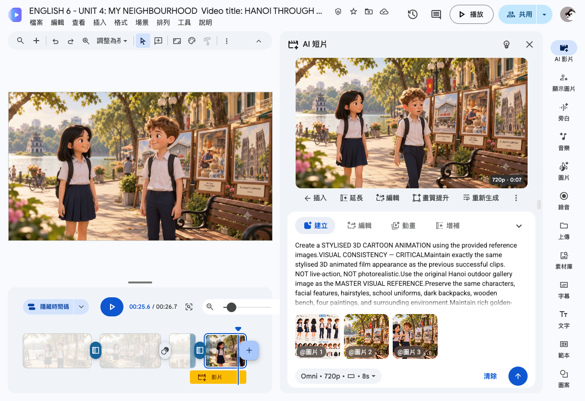
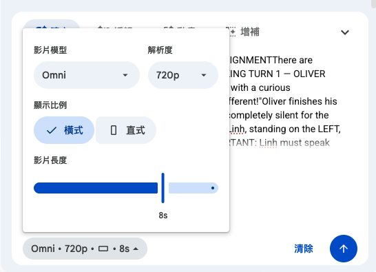
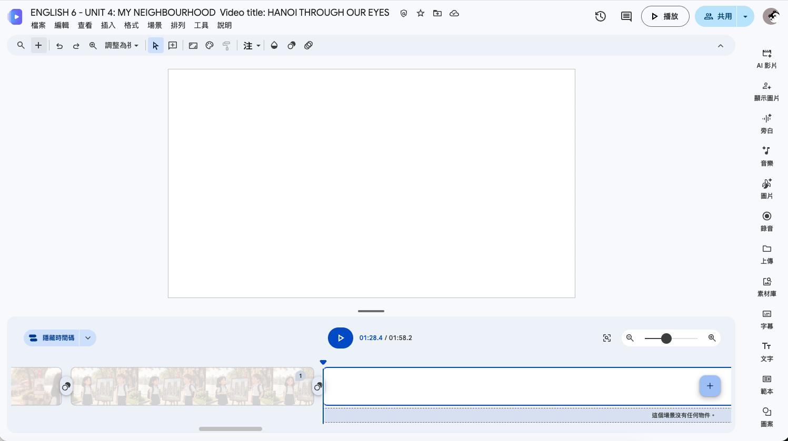
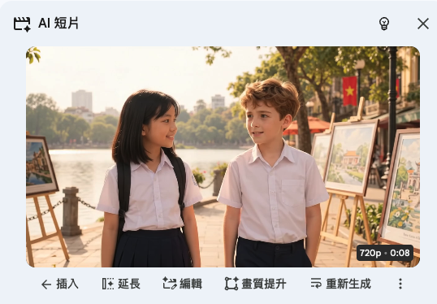
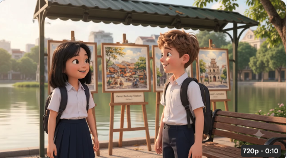
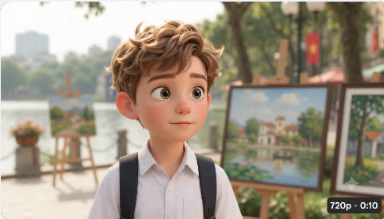
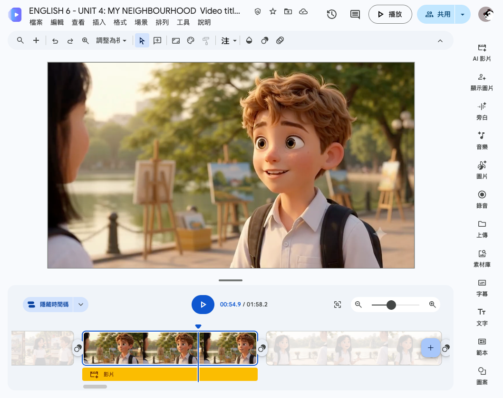
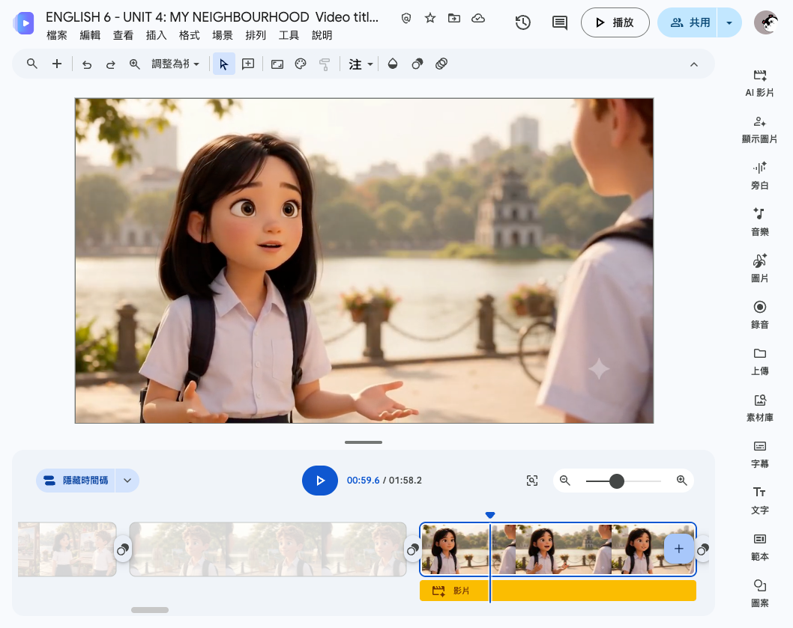
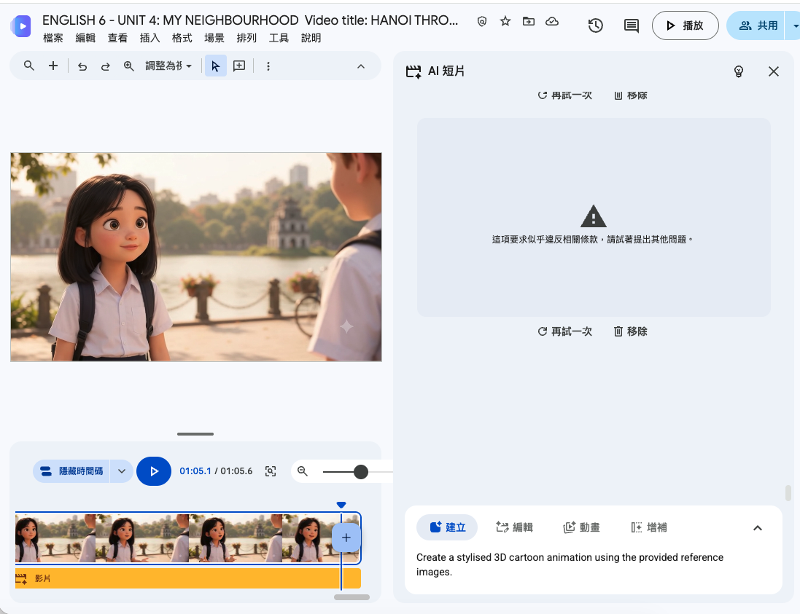

需要準備哪些設定圖？
| 設定圖 | 重要性 | 內容 |
|---|---|---|
| 主視覺圖 ⭐ | 最重要 | 角色 + 場景同時出現，構圖和光線都確定好 |
| 角色設定圖 | 必備 | 主要角色的多角度、表情細節 |
| 場景設定圖 | 視需要 | 背景環境的全景 |
「角色 + 場景」的單張主視覺，比角色圖 + 場景圖分開上傳更能讓 AI 維持構圖一致性。它同時鎖定了角色位置、背景、整體氣氛。
每段要上傳幾張？
主視覺圖 + 角色設定圖。
不放純背景圖——放了反而讓 AI 嘗試重建場景。
主視覺圖 + 角色設定圖 + 場景設定圖。

建議設定
| 模型 | Omni |
| 影片長度 | 8–10 秒 |
| 解析度 | 720p |
| 顯示比例 | 橫式 16:9 |
同一支影片的所有片段都用同一組設定，不要每段改模型。
腳本拆片段原則
- 每個片段只做一件事（一組對白、一個動作）
- 超過 10 秒的對白要拆成兩段
- 不要在同一個片段要求太多鏡頭動作
- 保留原本故事結構，只在製作階段拆開，最後在時間軸組合
把 AI 影片拖拉進時間軸時，Google Vids 沒辦法把它放到最後一個位置，只能放倒數第二個。
解法：在時間軸尾端事先新增一個空白場景（「這個場景沒有任何物件」）當佔位符，拖入 AI 片段後就會落在倒數第二格，而最後那個空白場景刪掉就好。
這段 Prompt 貼在每次生成的最前面，確保所有片段風格一致。依你的影片風格調整括號內的內容。
固定這段後，每次只需接上當段的鏡頭、動作、對白描述。



當段專屬 Prompt 結構
聲音一致性
在 Prompt 裡描述角色聲音特徵可以降低差距，但無法完全鎖定。如需高度一致的聲音，考慮後製統一配音。
AI 生成了真人影片，不是動畫
問題分類：視覺風格跑掉
背景也和設定圖不同，AI 重新設計了整個河內街道。
「cinematic」被解讀成真人電影風格；過度描述環境讓 AI 自由發揮，而不是參考上傳的設定圖。
加上 STYLISED 3D CARTOON ANIMATION 和 NOT live-action，並移除詳細的環境描述——把環境細節交給設定圖去控制。
設定圖越完整，Prompt 裡的環境描述就應該越簡短。過度描述反而讓 AI 覺得可以自由生成。

背景被重新設計，多了一個大遮棚
問題分類：背景元素走樣
原本設定圖裡沒有遮棚，AI 自作主張添加了。長椅也跑到後方。
1. 要求「鏡頭推近畫作」讓 AI 重新建構新角度，改變了背景配置。
2. 沒有明確禁止 AI 不能加入的元素，AI 自行「補完」了遮棚。
移除鏡頭移動的要求；明確加入 NO roof, NO canopy, NO tent；指定主視覺為 Master Reference。
禁止要說具體，不能只說「保持原本」——要直接寫你不想看到什麼。

色調變白 + 站位跑掉
問題分類：切換到近景後出現新問題
背景持續不穩定，改成「只拍 Oliver 中近景、背景虛化」。跳動問題消失，但帶來了新問題。
溫暖黃昏光變成偏白的日光。
新問題 2：角色站位左右跑掉Linh 在左、Oliver 在右的設定跑掉，AI 把近景當成新構圖重新排位。
AI 把近景當成獨立新鏡頭，自動校正光線為標準日光並重新安排構圖。
明確指定左右站位；禁止 pale/grey/cool/white；說明這段是「從主視覺裁切的近景，不是新構圖」。

人物聲音突然變成熟
問題分類：音訊——聲線與年齡不符
前三段聲音都像 12 歲兒童，Clip 4 突然變成成熟的男女聲線，和前面片段明顯脫節。
Prompt 只寫「12-year-old voice」，AI 把這解讀為角色年齡標籤，不是聲線特徵描述。每段影片是獨立生成的，AI 不會自動沿用前面片段的聲線設定。
改成描述聲線特徵而不是年齡數字。明確排除：deep voice、mature resonance、voice cracking、adult narrator。
聲線不用年齡描述，用特徵描述。「尚未變聲的男生聲線」比「12歲男生」更準確。
台詞講完後，AI 自動加入背景音樂
問題分類：音訊——不需要的背景音樂
台詞講完，畫面切到等待反應的靜止鏡頭時，AI 自動用音樂填補空白。即使 Prompt 有寫「No background music」，仍然出現。
1. Prompt 安排了「說完話後停留幾秒等待反應」的結尾畫面，AI 把這段空白解讀為需要填補音效的地方。
2. 「No background music」不夠具體，AI 不知道「對話結束後的空白也不行」。
不安排台詞結束後的等待畫面；讓最後一個字盡量靠近影片結尾；禁止語要說「Do not fill silent moments with music」，禁到具體場景。
不要讓影片結尾有空白時間。台詞講完就結束，不留反應畫面，是防止 AI 插入音樂最有效的方式。
台詞被分配給錯誤的角色
問題分類：音訊——說話者分配錯誤
同一段有兩位角色說話，AI 自由決定誰說哪句，導致 Linh 的發音示範被 Oliver 接手說完。
Prompt 只寫了「對白內容」，沒有明確標記「這句是誰說的、另一個人這時候閉嘴」。AI 自行決定說話順序，容易在句子交接時搞錯說話者。
用「SPEAKING TURN 1 - OLIVER ONLY」和「SPEAKING TURN 2 - LINH ONLY」結構明確標注每個說話輪次；明確寫出「另一個人 mouth closed, remains completely silent」。
一段只有一個說話者是最安全的做法。如果必須兩人輪流，每個說話輪次都要獨立標注，並且明確告訴 AI 另一個人「不說話、嘴巴閉著」。
越南地名 Bat Trang 發音跑掉
問題分類：音訊——地名發音不一致
兩位角色同一個地名念法不一致，而且 Oliver 的發音明顯不像越南地名。
AI 用英文拼字規則推測 Trang 的發音，解讀成英文字 "train" 的相似音。越南語地名沒有聲調標記，AI 無法判斷正確發音。
河內口音近似「巴特・張」，第二音節 Tràng 起音類似英文 ch，尾巴帶鼻音 ng，聲調往下降。不是「train」。
在台詞裡把 Bat Trang 改成語音近似拼法 Baht Chahng，讓 AI TTS 念得接近越南語。畫面文字仍維持正式拼法 Bat Trang。
每段分開生成，片段間場景不連貫
問題分類：構圖——多片段剪輯的空間一致性
每段是獨立生成的，AI 不會延續上一段的場景狀態。強制要求「保持一樣」效果有限。
Google Vids 每次生成都是獨立的 AI 推斷，不是「把上一張圖再加動畫」。即使 Prompt 完全相同，生成結果也不會像同一個場景拍出來的。
誰說話鏡頭就在誰身上。說話者的單人中近景背景模糊，觀眾注意力在角色臉上，自然不會察覺背景不一致。
三種固定鏡頭
| 鏡頭類型 | 構圖規則 | 使用時機 |
|---|---|---|
| A｜Oliver 說話 | Oliver 在畫面右半部，視線朝左（朝 Linh 方向）；背景輕微模糊 | Oliver 的每一句台詞 |
| B｜Linh 說話 | Linh 在畫面左半部，視線朝右（朝 Oliver 方向）；背景輕微模糊 | Linh 的每一句台詞 |
| C｜雙人全景 | 兩人 + 四幅畫作同框；背景完整呈現 | 場景建立、最後共同做決定；盡量少用 |
每段只有一個人說話，AI 就不需要決定誰說哪句。說話者錯誤（案例 6）的機率大幅降低。


Prompt 觸發內容審查，生成被擋下
問題分類：平台限制——內容政策誤判
台詞本身完全正常（"Good idea! And it's beautiful!"），被擋下的原因不是內容，而是 Prompt 的描述方式。
多個關於未成年人外貌、年齡和身體特徵的描述組合在一起，觸發了自動審查：
12-year-old British boyyouthful facial proportionsframed from the chest upNo mature teenage voice
單獨一條沒問題，放在一起可能被誤判。確切原因 Google 不會說明。
不再重複描述年齡、身體部位、聲音特徵清單。只說「用參考圖的風格」、「說這句話」、「這樣的鏡頭」。
遇到誤擋：先大幅精簡 Prompt，移除年齡+身體描述的組合，不要嘗試繞過審查。如果精簡版仍被擋，透過 Help → Help Vids improve 回報誤判。

常見問題快速對照
| 問題現象 | 根本原因 | 解法 |
|---|---|---|
| 生成了真人影片 | 「cinematic」被解讀成電影 | 開頭寫 STYLISED 3D CARTOON ANIMATION，加 NOT live-action |
| 背景被重新設計 | 要求鏡頭移動 / 環境描述太多 | 固定鏡頭；把主視覺定義為 Master Reference；減少環境文字描述 |
| AI 自行添加元素（如遮棚） | 沒有明確禁止 | 明確列出：NO roof, NO canopy |
| 說話中途背景跳動 | 場景複雜，AI 一致性不夠 | 改用角色中近景，背景虛化 |
| 色調變白 / 偏冷 | AI 自動校正成標準日光 | 指定 warm golden + 禁止 pale / grey / cool / white |
| 角色站位左右跑掉 | AI 把近景當新構圖 | 指定「Linh 在左，Oliver 在右」；說明這是從主視覺裁切的近景 |
| 文字 / 地名出現錯誤 | AI 處理長文字不穩定 | 後製用文字圖層加入，不交給 AI 生成 |
| 人物聲音突然變成熟 | 只寫年齡，不夠描述聲線特徵 | 改用特徵描述：pre-pubescent, before voice has deepened；明確排除 deep, resonant, adult |
| 台詞後自動加背景音樂 | 台詞結束後有空白，AI 用音樂填補 | 讓最後一個字靠近影片結尾；不安排「說完話後等待」的畫面；禁止寫明「Do not fill silent moments with music」 |
| 台詞被分配給錯誤角色 | Prompt 沒明確指定每句話是誰說的 | 用 SPEAKING TURN 1 — OLIVER ONLY 結構；明確寫「另一人 mouth closed, remains silent」 |
| 越南地名發音跑掉 | AI 用英文拼字規則推測越南語發音 | 台詞改用語音近似拼法 Baht Chahng（畫面文字仍用正式拼法 Bat Trang） |
| 生成請求被擋下「似乎違反相關條款」 | Prompt 裡多個涉及未成年外貌/年齡/身體描述的組合觸發自動審查 | 大幅精簡 Prompt；拿掉年齡數字、生理特徵清單、聲音特徵列表；改說「用參考圖的角色風格」 |
不能假設 AI 記得上一段。NOT live-action, NOT photorealistic 每段都要寫。
「推近」「平移」都會觸發 AI 重建環境。只用 stable shot。
過度描述環境反而讓 AI 覺得有自由發揮的空間，忽略參考圖。
要直接寫你不想要什麼：NO canopy、NOT pale。
不要繼續嘗試穩定背景。改成角色中近景、背景虛化，用構圖轉移注意力。
12-year-old 是角色標籤，不是聲線要求。要說 pre-pubescent, before voice has deepened, no deep resonance。
說完話後有空白，AI 會用音樂填補。讓台詞結束 = 影片結束，徹底防止。
用 SPEAKING TURN 1 — OLIVER ONLY；對方要寫 mouth closed, remains completely silent。
不要試圖讓每段保持相同場景。誰說話就只拍誰的中近景，背景模糊，觀眾注意力在臉上就不會察覺背景跑掉。Oliver 說話在畫面右、看左；Linh 說話在畫面左、看右。
遇到「違反相關條款」錯誤：移除所有年齡數字、外貌特徵、聲音特徵描述，改說「reference image 的角色風格」。不要嘗試換說法繞過審查——如果精簡後仍被擋，透過 Help → Help Vids improve 回報誤判。